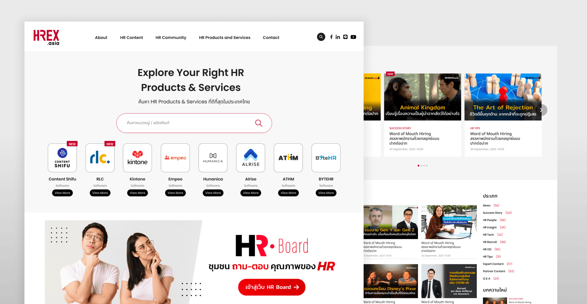
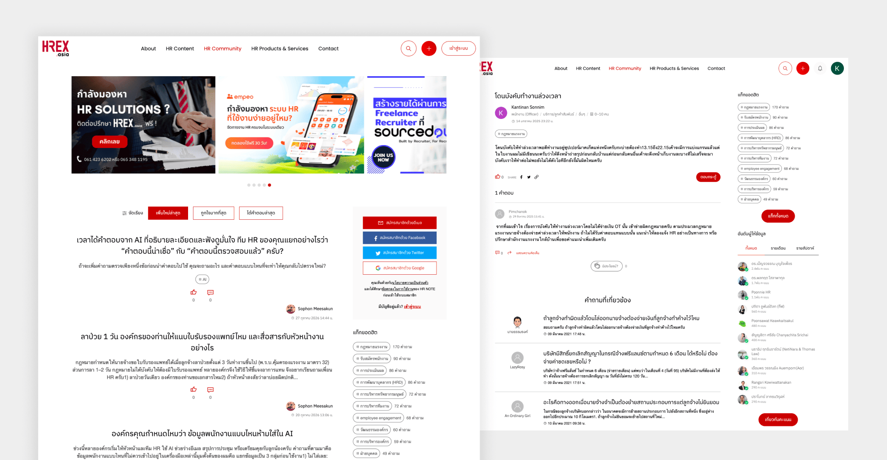
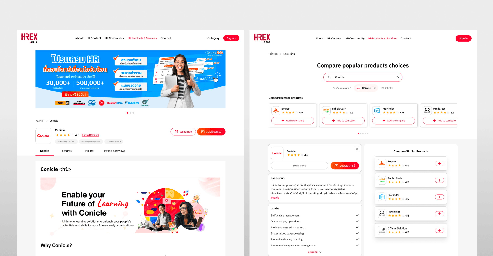

01. Overview
HHREX.asia brings three services together for HR professionals and business leaders:
Content: Content: News, articles, insights, events, videos, and other resources to help users stay informed about HR.
HR Community: A Q&A forum where HR professionals can ask questions, share experience, and learn from peers and experts.
HR Solution: A discovery platform for HR products and services, where organizations can find, compare, and review providers.

02. Problem
HR professionals need to stay informed while also making practical decisions about people, processes, and technology. Relevant knowledge and solution information can be spread across articles, events, videos, and provider pages, making it difficult to know where to start or how to move from learning about a topic to exploring possible solutions.
The design challenge was to organize HREX’s wide range of content and services into one website that supports two related needs: learning about HR topics and finding solutions for an organization.

03. Key UX Challenges
The challenge was to connect three different services under one brand while preserving the distinct tasks and expectations of each.
Make the three services easy to distinguish
Communicate what users can do in HR Content, HR Community, and HR Solution.
Help users navigate a broad content library
Organize articles, news, insights, events, and videos so users can browse by topic or find relevant information quickly.
Encourage useful community participation
Make it straightforward to find existing discussions, ask questions, and share experience with other HR professionals.
Support solution evaluation
Help organizations browse relevant services and understand key differences between providers.

04. Design Process
I approached HREX as a connected platform with three distinct user journeys: learn, discuss, and find a solution.
Define the service structure
I mapped the purpose of each service and the primary user task it supports. HR Content supports learning and exploration; HR Community supports asking, answering, and sharing experience; HR Solution supports discovering and evaluating providers. This gave each area a clear role within the larger HREX platform.
Organize navigation and information architecture
I structured the main navigation around the three services, then considered the content and categories users would encounter within each one. This helps users choose a starting point based on their goal, rather than needing to understand HREX’s full content structure first.
Design HR Content discovery
I organized content around recognizable topics and formats, with clear visual patterns for articles, news, events, and videos. The goal was to help users scan what is new, explore a topic, and continue to related content.
Design the HR Community journey
I considered how users discover existing questions, search for discussions, and take part by asking or answering. The interface should make the discussion context clear and help users understand how community contributions can support practical HR work.
Design the HR Solution journey
I structured solution discovery around browsing categories and reviewing providers. HREX describes its solution service as a place to find, compare, and review HR products and services. The current platform also includes features such as saving items and tracking contact status for registered users.